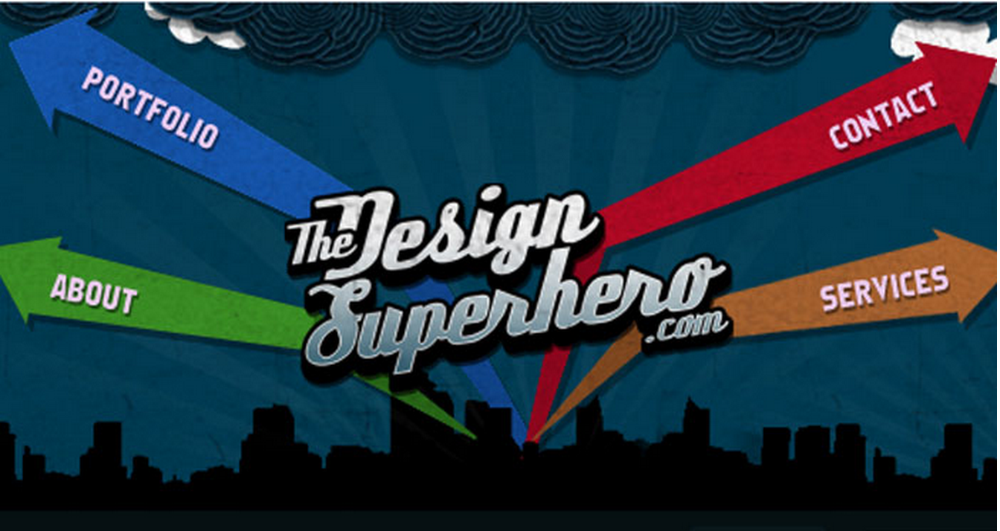
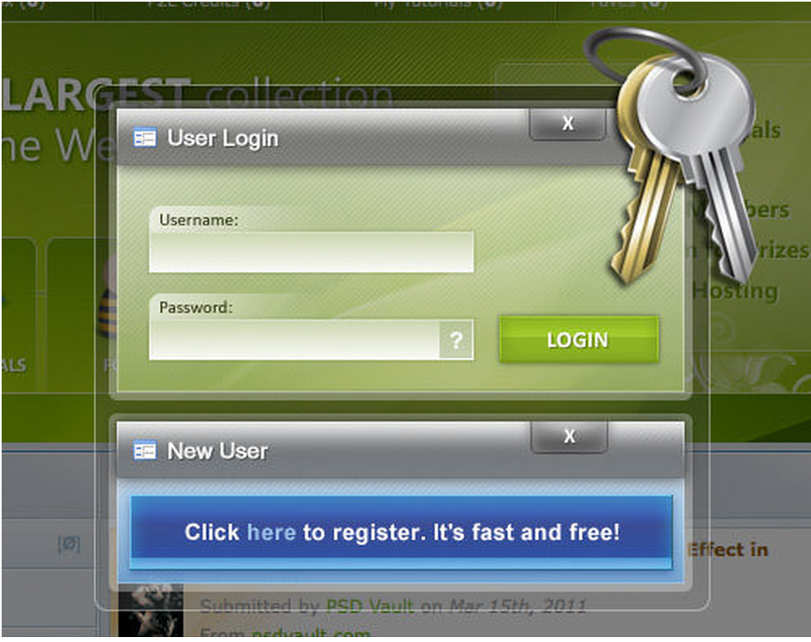
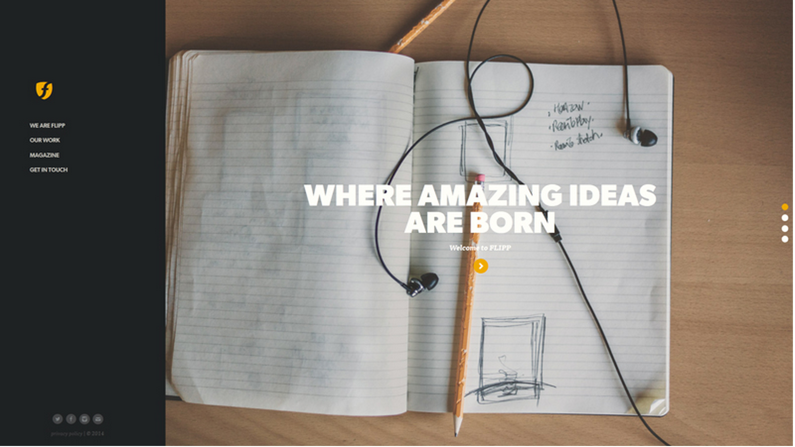
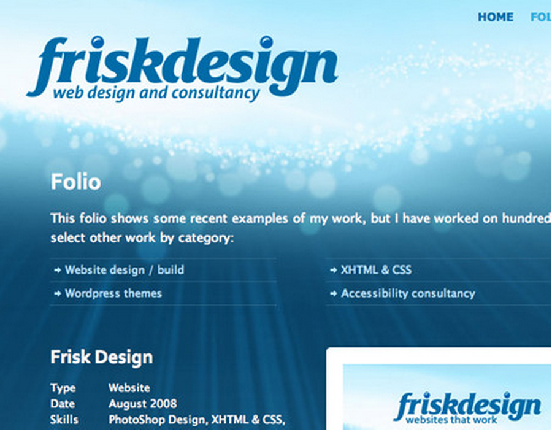
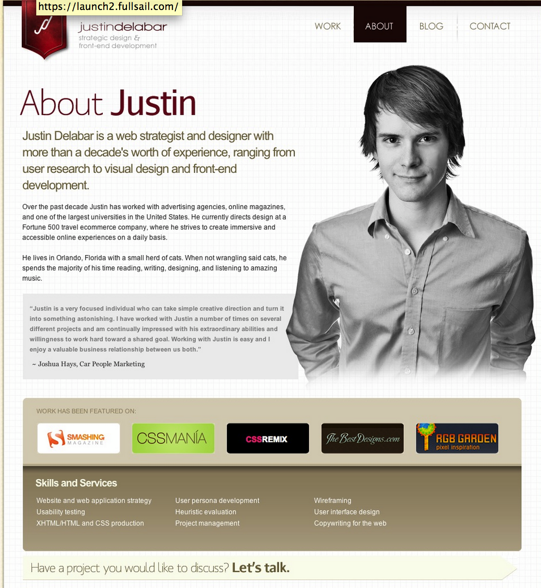
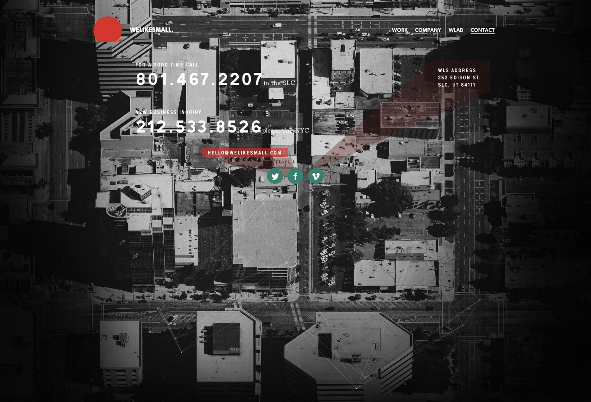
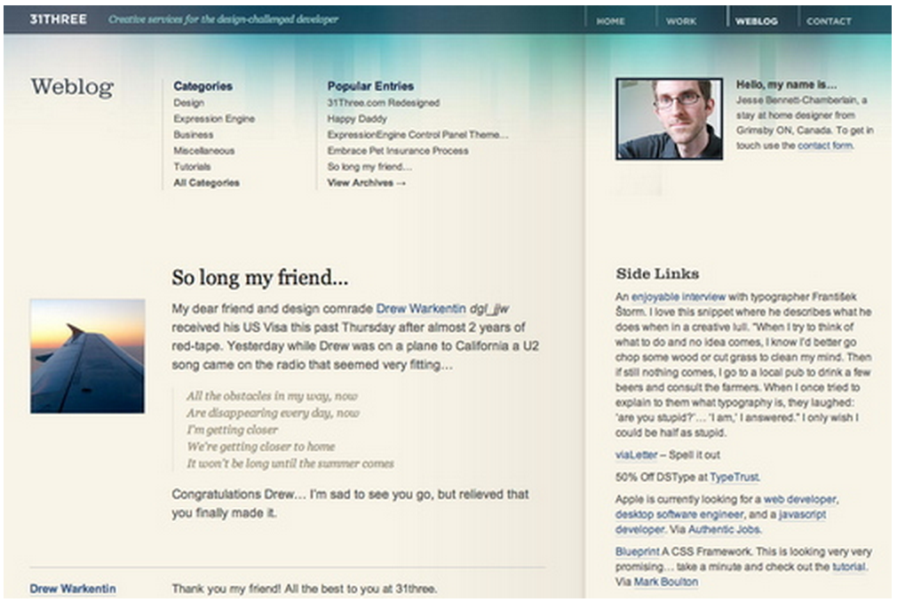
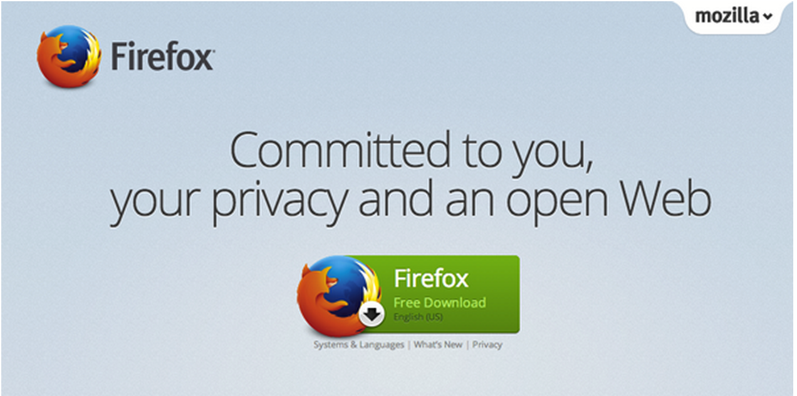
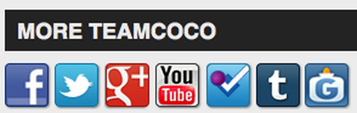
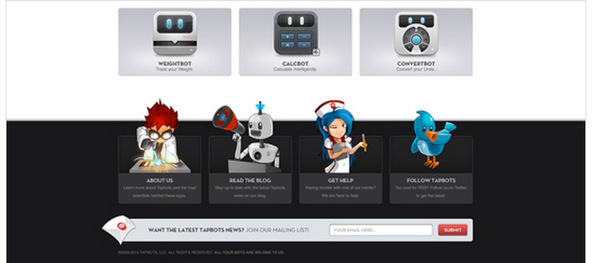

I think the target audience is a younger crowd. You can tell because of how they made their design. I think it looks
unique and will grab the users attention. I believe that is what the client wanted it to do. It doesn't look like a rectangle, professional looking
header. I like this style more than the others. It shows character in a website and I think character will attract more users. The colors go great
together and the arrows are creative.

I think this login form targets the general population of all ages. This form engages the users and makes it a little
easier to read. It also makes it cleaner and more organized for the user. I think the client succeeded in its goals for the users.
This is my favorite kind of form because it actually pops up and fades everything else out. It pushes all your focus to the form.
The form is organized and smooth looking. The keys represents security and makes the user feel safe.

The sidebar focuses mostly on the younger, general population. I think the goal was to make the sidebar simple, but have enough
information for you to use. I think the goal was met and meets the users needs. If I was the user I would love the sidebar.
I think it's cool because the sidebar is also the navigation. It's simple and user friendly. I don't care much for the color of
the sidebar. I would have liked to see a brighter color of red or blue. The website is about ideas and a brighter color fits better
in my opinion. I also think the text could be a bit bigger, but overall I think it's a nice idea.

This background focuses on web designers and general population. I think the idea of this background is to provide a smooth,
mellow atmosphere. I think the user would be satisfied with the background. It's not to flashy, but it's just enough to grab your attention.
I prefer websites that have a background as an image. I think it provides more depth to your website, than an actual plain color would.
The image isn't over the top by any means and it nice to look at.

This about page focuses on web designers and general population. The goal seems to be to give you in depth information about
the person. I like this page because the font is an average size and the whole space of the container is filled up. The white background is a good
idea to me because it allows less distraction so you can focus on the actual text. The image of the person is a great idea because
it draws you closer to the person. I think this was a well thought out about page.

This contact page focuses on the general population. I think the goal when making this contact page was to create a creative way
to make a contact page. I think the user would be completely satisfied with the contact page. I think this page is awesome because
the entire page is filled up. Most contact pages have a lot of empty space because there isn't a lot to discuss when your telling someone your address
and phone number. Very few websites actually use the entire space and this is one of them. The map is in depth and detailed. The only thing
I don't like is the color of the text. White blends in with the background. I would rather see a different color so it would be easier to read.

This blog focuses on the general population. I think the goal was to be simple, but interactive. The user needs to be able to
easily read posts and reply to a blog. I like the design because it's simple. It has a container which contains an image and the blog.
Then there is a side column that contains the writers information. Im not a big fan of tan, but I like the way the blue drops into it.
It's a very cool effect that helps the user flow through the website.

This CTA focuses on the general population. The goal in this cta is to get the user to click the download button. I like this design because
there not trying to hard. All they are doing is using their words to get you to click the download button. Their words are everything and couldn't have
been said better. They let you know that they are committed to there customers, committed to your privacy, and committed to building a great web browser.
The download button is big which makes it easier to click on and takes up more space. I think this is a well designed call to action.

This feature focuses on the general population because almost everyone is connected to social media some way. The goal here is to get you to click
on one of these social media websites. Some websites use these to login, follow, or post things on your account. I like this feature
because it helps the user interact. The user is always looking for ways to interact within a website. Another reason why I like this feature
because it's easy to place these icons anywhere on your website because the icons can be small. If I were to make a website I would
definitely incorporate these features.

This footer focuses on the young to general population. The goal of this footer is to get you to actually read whats there and explore
what the rest of the website has to offer. This footer is unique because of the illustration it provides. Anyone can have text in the footer,
but to use illustrations is different and adds more effect to the bottom of the page. I also like that the illustrations actually pop out
a bit higher than the footer. It makes it look 3d and have that pop effect.